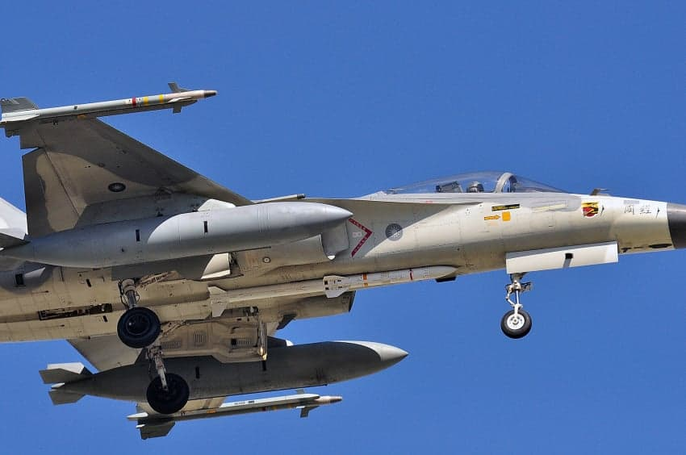
여기 경국 전투기가 있다
미국이 F-16을 안 팔아줘서 자체 개발한 이 친구는 당연하겠지만 공대공 무장도 미국산의 인티가 거절되어 자국산을 개발해 탑재했는데 일단 윙팁에 달린게
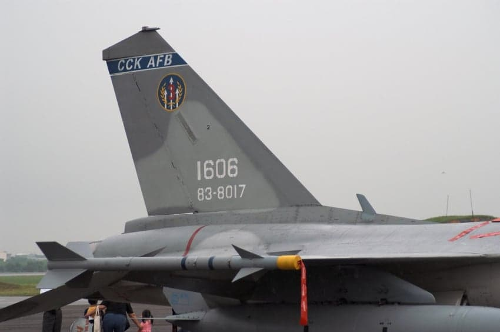
천검1 공대공
섬짱-사이드와인더다
이걸 그대로 가져다가
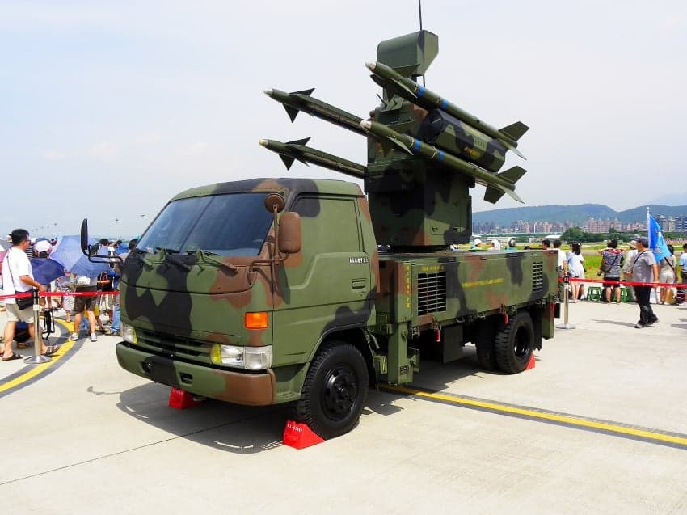
자체 레이더를 탑재하고 트럭에 박아서 만든게 첩령 지대공 미사일이다
뭔가랑 닮았다고?
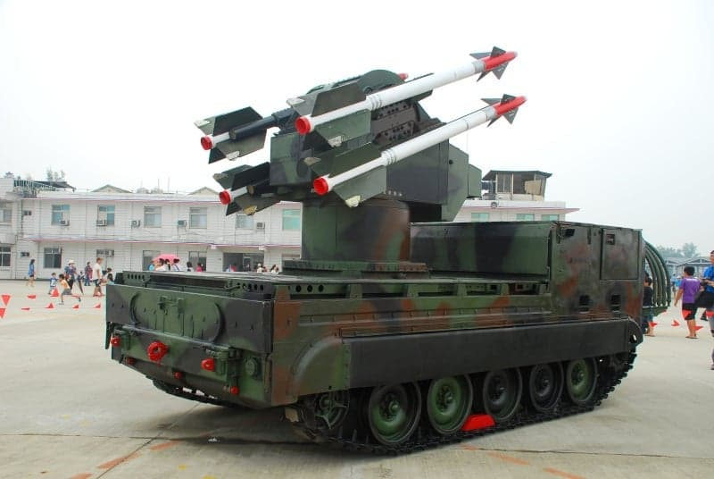
니가 생각하는 그게 맞다, 첩령은 수명이 끝나 도태중인 채퍼럴을 대체하기 위해 개발되었다
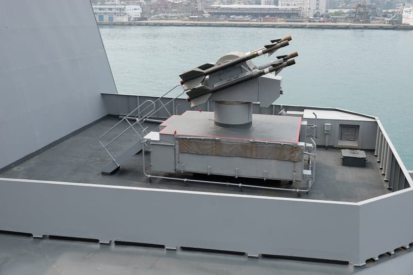
한편 똑같이 채퍼럴을 굴리던 대만 해군도 이놈에게 눈독을 들이기 시작했고 그래서 나온게
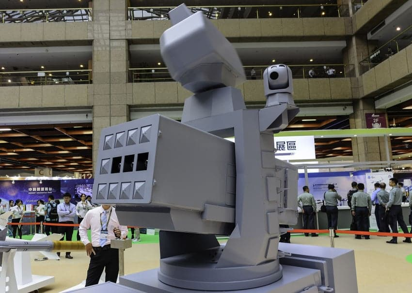
해검1이다
램 아니냐고? 맞다, 섬짱-램이다
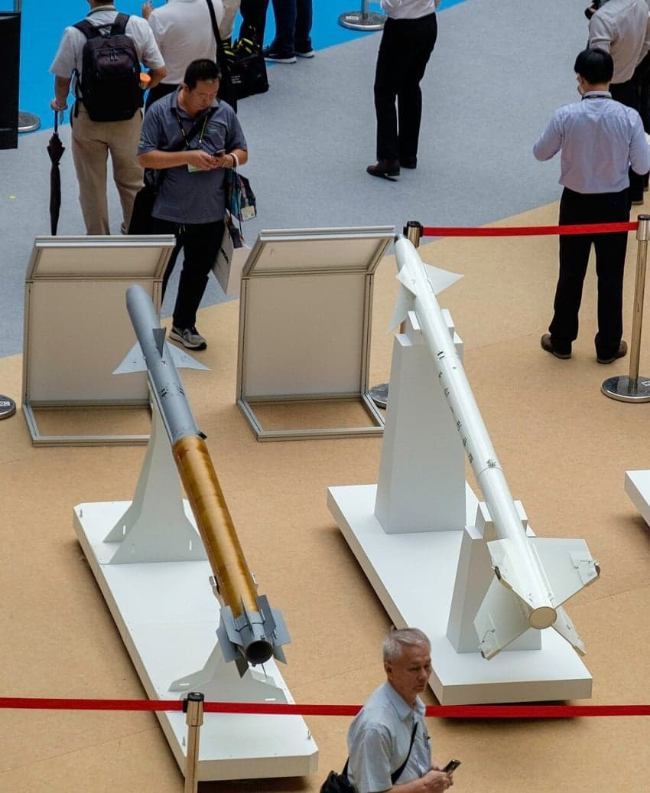
좌-해검1 우-천검1
천검1을 일부 개량해 회전식 발사대에 탑재한 해검1은 이후 대만 해군에 미사일형 CIWS로 도입될 예정이다
이제 동체에 달린 놈을 보면
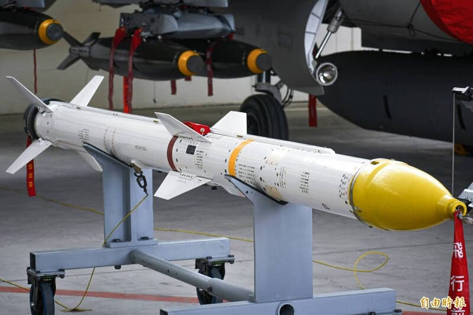
이건 천검2고
섬짱-암람이다
이걸 그대로 가져다가 차에 박아서 만든게
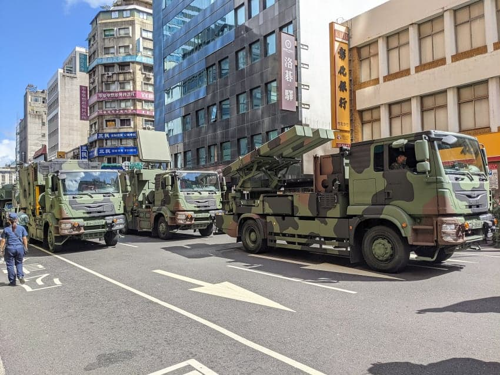
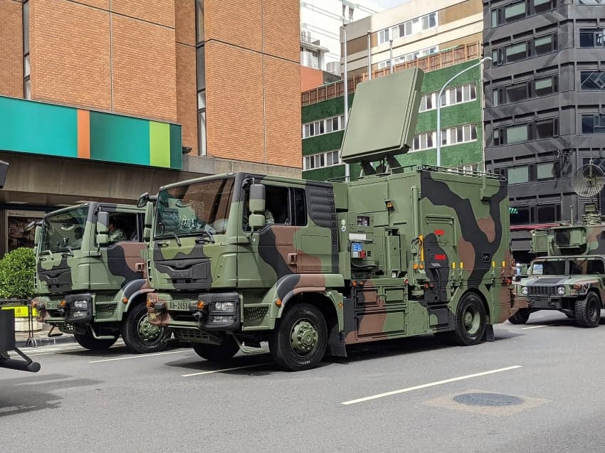
육검2 지대공 미사일이고
이걸 또 뜯어다가 배에 박아서
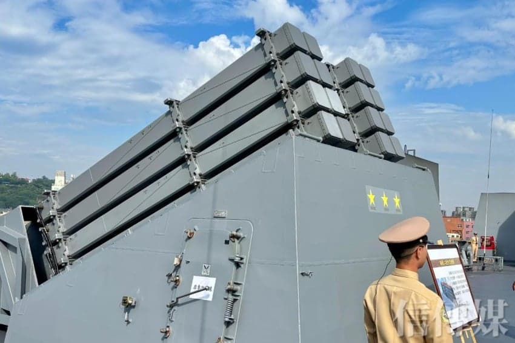
해검2 함대공이 되었고
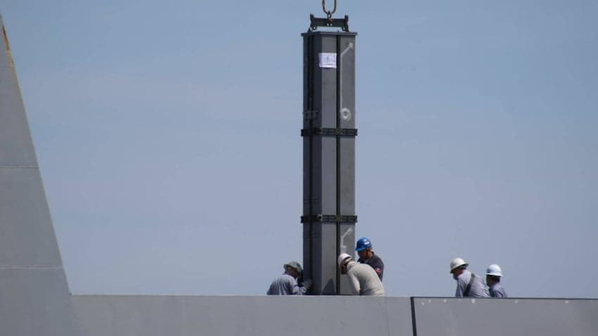
이걸 또 개량해다가 자국산 VLS에 박은 개량형까지 만들었다
ㄹㅇ 이정도면 쌀먹의 신 급인데 아직도 하나가 남았으니
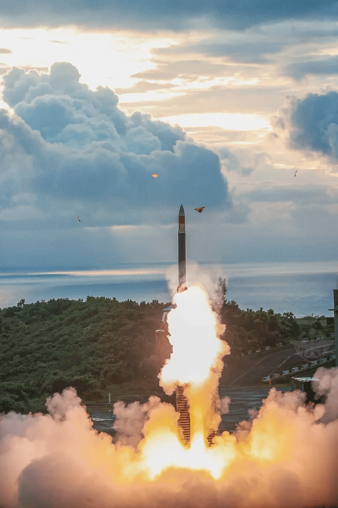
대만의 주력 장거리 지대공 미사일인 천궁3(톈궁3)다
최대 사거리가 200km에 달하는 이놈을 대만 해군이 그냥 보고만 있을까?
당연히 아니다
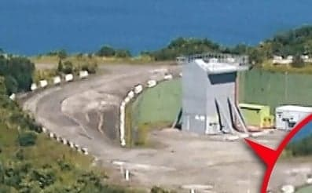
대만은 미국에서 Mk41 VLS를 소량 도입해 중산과학원 시험장에 배치한 뒤 천궁3의 해상형, 해궁3의 개발을 착수한다
수차례의 지상 시험발사 이후
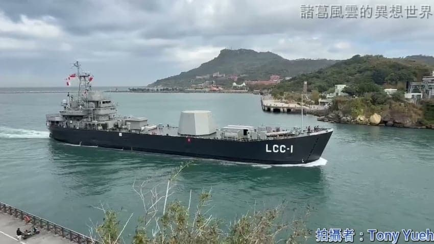
Mk41을 시험함 가오슝에 탑재하여(함교 앞에 있는게 Mk41) 해상 시험발사를 최소 3회 실시했다
이게 비닉사업이라 어디에 탑재 예정인지 제대로 나온게 없긴 한데 일단 큰 추정은 2개
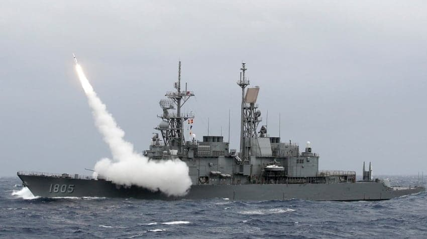
첫번째는 기륭급에 Mk41을 탑재한 뒤 거기다가 박는건데 이건 이미 SM-2를 운용중인 기륭급에선 굳이? 라는 선택지이고
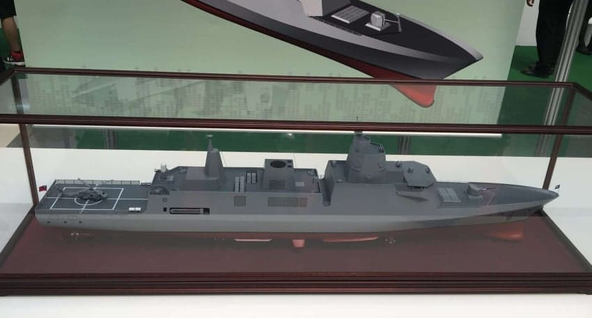
나머지 하나는 대만 해군이 건조를 추진중인 차기 6000t급 방공구축함에 탑재하는 방안이다
사실 후자가 99% 확정인데 본체인 방공구축함 건조계획 자체가 실현 가능성에 의문이 있는 상황이라 제대로 나올지가 미지수인 상황
대만군의 자국산 방공체계 구축을 보면 사실 한국이 해궁 가져다 LAMD 만들고 L-SAM 가져다가 함대공-2 만드는 등 한국과 비슷한 행보를 보이는데 가장 큰 차이점은 대만군은 저걸 원한적이 없다는 것
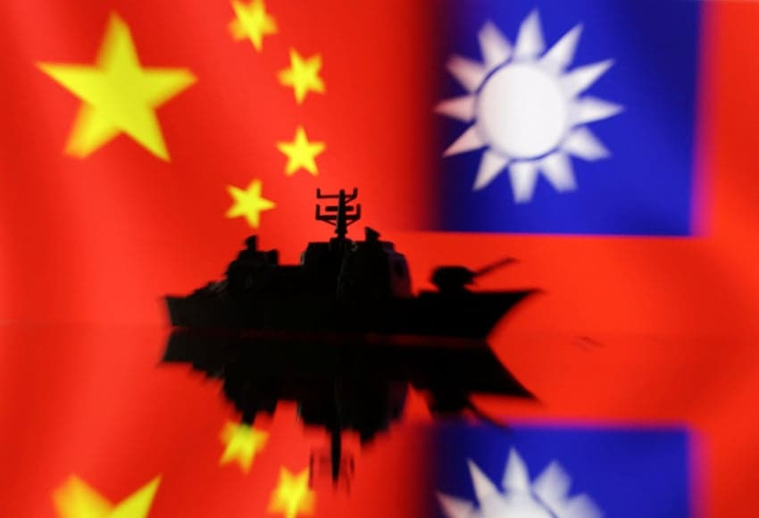
대만군은 사실 자국산이고 지랄이고 걍 미국이나 유럽산 미사일을 쓰고 싶은데 중국의 압박에 수입이 막혀 울며 겨자먹기로 자국산을 사용중인 상황이다
댓글
수집 당시 댓글 97개
OoOOOOOooOo · 11.21 13:54:36
ㅇㅇ · 11.21 14:00:53
· ㅇㅇ아닌윾동 · 11.21 14:02:51
· ㅇㅇ · 11.21 14:24:21
ㅇㅇ · 11.21 14:07:54
정보분석가 · 11.21 14:13:30
ㅇㅇㅇ · 11.21 14:24:08
· ㅇㅇ · 11.22 22:04:36
· ㅇㅇ · 11.22 22:26:39
섹ㅖ수교단 · 11.21 14:35:44
패튼2077년현역기원 · 11.21 14:45:31
ㅇㅇ · 11.21 14:51:58
ㅇㅇ · 11.21 15:09:27
asd · 11.21 15:42:30
· ㅇㅇ · 11.22 18:16:35
· ㅇㅇ · 11.22 22:07:07
· ㅇㅇ · 11.22 22:07:27
· ㅇㅇ · 11.22 22:19:02
삭제됨 · 11.21 16:39:44
· ㅇㅇ아닌윾동 · 11.21 17:29:22
minix · 11.21 17:27:25
곤남충이기노데스웅차 · 11.21 19:09:10
· 곤남충이기노데스웅차 · 11.21 19:09:23
ㅇㅇ · 11.22 21:56:13
· ㅇㅇ · 11.22 22:17:13
· ㅇㅇ · 11.23 02:52:01
ㅇㅇ · 11.22 21:56:26
봇치쟝 · 11.22 21:56:26
DOOM · 11.22 21:57:49
ㅇㅇ · 11.22 21:58:37
ㅇㅇ · 11.22 21:59:37
ㅇㅇ · 11.22 21:59:54
ㅇㅇ · 11.22 22:01:18
かなたん · 11.22 22:01:33
· 이모티콘수집 · 11.22 22:13:31
ㅇㅇ · 11.22 22:05:59
· ㅇㅇ · 11.22 22:10:14
· ㅇㅇ · 11.22 22:20:00
· ㅇㅇ · 11.22 22:21:24
· ㅇㅇ · 11.22 22:46:50
ㅇㅇ · 11.22 22:07:38
ㅇㅇ · 11.22 22:07:58
ㅇㅇ · 11.22 22:08:00
NO벨과학상개센징 · 11.22 22:14:18
· NO벨과학상개센징 · 11.22 22:14:30
· NO벨과학상개센징 · 11.22 22:14:41
· NO벨과학상개센징 · 11.22 22:14:58
ㅇㅇ · 11.22 22:14:22
· ㅇㅇ · 11.22 22:19:06
· ㅇㅇ · 11.22 22:28:29
ㅇㅇ · 11.22 22:18:55
· ㅇㅇ · 11.23 06:34:19
ㅇㅇ · 11.22 22:19:09
히이잉 · 11.22 22:19:17
ㅇㅇ · 11.22 22:20:22
ㅇㅇ · 11.22 22:20:30
· ㅇㅇ · 11.22 22:22:27
ㅇㅇ · 11.22 22:22:06
· ㅇㅇ · 11.22 22:23:22
ㅇㅇ · 11.22 22:32:38
ㅇㅇ · 11.22 22:34:34
· ㅇㅇ · 11.22 22:35:08
ㅇㅇ · 11.22 22:34:46
· ㅇㅇ · 11.22 22:46:56
· ㅇㅇ · 11.22 22:49:20
ㅇㅇ · 11.22 22:43:08
· ㅇㅇ · 11.22 22:44:21
· ㅇㅇ · 11.22 23:06:14
· ㅇㅇ · 11.22 23:13:17
ㅇㅇ · 11.22 22:45:41
· ㅇㅇ · 11.22 22:48:09
ㅇㅇ · 11.22 22:56:33
ㅇㅇ · 11.22 23:04:53
· ㅇㅇ · 11.22 23:48:35
· ㅇㅇ · 11.23 01:08:30
ㅇㅇ · 11.22 23:10:56
ㅇㅇ · 11.22 23:13:33
ㅇㅇ · 11.22 23:13:43
ㅇㅇ · 11.22 23:30:35
04p · 11.22 23:31:52
ㅇㅇ · 11.22 23:48:00
ㅇㅇ · 11.23 00:07:42
ㅇㅇ · 11.23 00:35:17
ㅇㅇ · 11.23 01:40:19
ㅇㅇ · 11.23 02:11:53
ㅇㅇ · 11.23 02:11:57
ㅇㅇ · 11.23 02:29:52
· ㅇㅇ · 11.23 09:38:35
ㅇㅇ · 11.23 03:07:39
ㅇㅇ · 11.23 03:32:04
ㅇㅇ · 11.23 08:30:04
ㅇㅇ · 11.23 09:36:57
ㅇㅇ · 11.23 15:07:31
ㅇㅇ · 11.23 16:35:09
ㅇㅇ · 11.23 17:20:46
ㅇㅇ · 11.23 18:01:13
CR7 · 11.23 18:25:19